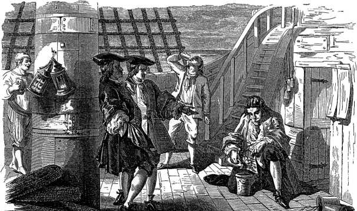

История в бокалах . Великий отрезвитель.


Кофе – отрезвляющий напиток,
мощное питание для мозга. В отличие от
алкогольных напитков усиливает чистоту
и ясность в голове. Кофе разгоняет облака
в воображении и облегчает их мрачный вес.
Кофе внезапно освещает
тусклую реальность вспышкой истины.
Просвещенная чашка
Греки ошибались. Тяжелые предметы падают не быстрее легких. Земля не является центром Вселенной, и сердце – это не печь, которая нагревает кровь, а насос, продвигающий ее по телу. Но только в начале XVII века, когда астрономы и анатомы открывали неведомые миры, европейские мыслители всерьез начали оспаривать старые догмы греческой философии. Первопроходцы, Галилео Галилей в Италии и Фрэнсис Бэкон в Англии, противопоставили слепой вере в древние тексты научное познание, основанное на эксперименте и рациональном анализе опытных данных. «Нет никакой надежды на какое-либо значительное увеличение научных знаний путем пересадки или добавления нового поверх старого», – заявил Бэкон
в своей книге «Новая логика», опубликованной в 1620 году. «Восстановление наук должно начинаться с самых основ, если мы не хотим вращаться в бесконечных кругах с презрительно медленной скоростью».
Бэкон и его последователи хотели разрушить здание человеческого знания до фундамента и восстановить его по кирпичику на новой прочной основе. Все может быть оспорено, ничто не принимается на веру. Путь к новой науке был расчищен религиозными войнами Реформации, поколебавшими авторитет церкви, особенно в Северной Европе. Дух рационального исследования стал основным направлением западной мысли в течение следующих двух столетий, коренным образом изменив взгляды на природу и общество.
Кульминацией этого периода, известного как Научная революция, стала эпоха Просвещения, в ходе которой эмпирический подход, принятый учеными, возобладал в философии, политике, религии и экономике. Западные мыслители превзошли мудрость древних и открыли себя для новых идей, расширяя границы знаний за пределы Старого Света. Это был своеобразный интеллектуальный ответ завоеваниям эпохи Великих географических открытий. Ушло в прошлое догматическое почтение к авторитету, будь то философскому, политическому или религиозному. Наступило время критики и свободы мысли.
Символом нового рационализма Европы стал кофе, напиток ученых, интеллектуалов и клерков – сегодня мы называем их работниками умственного труда – всех, кто трудится за письменным столом. Кофе будил их утром, обеспечивал высокую работоспособность в течение рабочего дня, помогал сконцентрироваться. Под кофе в респектабельных учреждениях проходили деловые переговоры и дискуссии.
Влияние кофе на жизнь Европы XVII века было особенно заметно, поскольку самыми распространенными напитками того времени, даже на завтрак, были слабоалкогольное пиво и вино. Чистая вода, особенно в густонаселенных городах, была в дефиците, а кофе, как и пиво, готовили с использованием кипяченой воды, следовательно, этот новый напиток стал безопасной альтернативой алкоголю, отрезвляющей, а не опьяняющей, усиливающей восприятие, а не искажающей реальность. Анонимная поэма, опубликованная в Лондоне в 1674 году, осудила вино как «сладкий яд предательского винограда», который топит «наш разум и наши души». Пиво было охарактеризовано как «туманный эль», который «осаждает наш мозг». Кофе, наоборот, был объявлен «серьезным и здоровым напитком, который исцеляет желудок, ускоряет разум, освобождает память, побеждает печаль и… возрождает дух, не сводя с ума».
Западная Европа начала выходить из многовекового алкогольного морока. «Этот напиток, – писал один британский наблюдатель в 1660 году, – вызвал повсеместную трезвость среди наций. Если раньше бывшие подмастерья и клерки по утрам участвовали в веселящих пьесах «Эль», «Пиво» и «Вино», вызывающих головокружение и делающих «актеров» непригодными для работы, теперь они играли «хороших парней», используя пробуждающий напиток».
Кофе рассматривали и как противоядие от алкоголя. «Кофе отрезвляет вас мгновенно», – заявлял французский писатель Сильвестр Дюфур в 1661 году. Представление о том, что кофе препятствует опьянению, сохраняется и по сей день, хотя в этом мало правды. На самом деле кофе замедляет процесс выведения алкоголя из организма.
Как бы то ни было, новый, не известный грекам и римлянам напиток открыл перед мыслителями XVII века новые горизонты, помог вырваться за рамки древних представлений о мировом устройстве. Кофе стал великим напитком ясности, воплощением современности и прогресса – идеальным напитком эпохи Просвещения.
Вино ислама
Стимулирующий эффект кофе был издавна известен в арабском мире, на родине напитка. Есть несколько романтических историй о его открытии. Одна рассказывает об эфиопском пастухе, который заметил, что его козы стали особенно резвыми после того, как съели коричневато-фиолетовые плоды какого-то дерева. Попробовав их, он поразился новым ощущениями и рассказал о своем открытии местному имаму. Имам, в свою очередь, придумал способ приготовления этих ягод – высушил, а затем прокипятил в воде. Получившийся в результате горячий напиток помогал бодрствовать во время ночных религиозных церемоний. Другая история рассказывает о человеке по имени Омар, который был обречен умереть от голода в пустыне у города Моха, в юго-западной части Аравийского полуострова. Видение направило его к кофейному дереву. Съев несколько ягод, он почувствовал прилив сил и смог вернуться в Моху. Его спасение восприняли как знак свыше – Бог пощадил его, чтобы передать человечеству знание о кофе.
Как и легенды, связанные с открытием пива, эти рассказы могут содержать лишь крупицы правды, однако обычай пить кофе, похоже, действительно появился в Йемене в середине XV века. И хотя кофейные ягоды, возможно, жевали, чтобы взбодриться, задолго до этого напиток из них впервые приготовили в Йемене. Эту инновацию часто приписывают Мухаммаду аль-Дабхани, ученому и члену мистического исламского суфийского ордена. К моменту его смерти около 1470 года кофе (араб. qahwa), несомненно, был знаком суфиям, которые с его помощью боролись со сном во время ночных бдений.
К 1510 году кофе, утратив свое первоначальное сакральное предназначение, распространился по всему арабскому миру. Его продавали на улицах и рыночных площадях Мекки и Каира, а затем в кофейнях, где в отличие от подпольных таверн, торговавших алкоголем, почтенные люди могли позволить себе встречаться. Многие мусульмане считали кофе достойной и законной альтернативой алкоголю, хотя его правовой статус был двусмысленным. По мнению некоторых богословов, с кофе следовало поступать как с вином и другими алкогольными напитками, запрещенными пророком Мухаммедом, поскольку его воздействие было сходно с опьянением.
Впервые религиозные лидеры ввели запрет на употребление кофе в Мекке в июне 1511 года. Губернатор Хаир Бег, ревностно следивший за соблюдением общественной морали, решил устроить суд над кофе. Он созвал совет экспертов и поместил перед ними «обвиняемого» – большой кувшин с кофе. После обсуждения его опьяняющих качеств совет согласился с мнением губернатора – продажа и употребление кофе должны быть запрещены. Это постановление было провозглашено по всей Мекке, кофе был «захвачен» и сожжен на улицах, а продавцы и некоторые клиенты подвергнуты показательному избиению. Однако через несколько месяцев верховные власти в Каире отменили это решение и реабилитировали кофе. Авторитет губернатора был подорван, и Хаир Бег покинул свой пост.
Но был ли кофе напитком, приводящим к опьянению? Богословы сломали немало копий в спорах о том, хотел ли пророк запретить опьяняющие напитки в целом или только злоупотребление алкоголем с целью опьянения. Все согласились с необходимостью юридического определения опьянения, и несколько таких определений были разработаны. «Пьяный» был весьма расплывчато определен как человек «рассеянный, с омраченным рассудком», который «отходит от пути умеренной добродетели и спокойствия, пребывает в глупости и невежестве» или «не понимает абсолютно ничего» и «не способен отличить мужчину от женщины или землю от небес». Эти определения, разработанные как богословские аргументы против алкогольных напитков, затем были применены и к кофе.
Однако на самом деле кофе, даже когда его употребляли в больших количествах, не оказывал такого же воздействия, как алкоголь. «Один выпивает кофе с именем Господа на устах и бодрствует, – говорили защитники кофе, – в то время как другой ищет бессмысленного восторга в алкоголе, игнорирует Господа и напивается». Противники кофе пытались утверждать, что любое изменение физического или психического состояния пьющего является основанием для запрета. Защитники напитка успешно опровергали этот аргумент, замечая, что пряная пища, например чеснок и лук, также вызывает сильный раздражающий эффект, заставляя людей плакать, но их употребление совершенно законно.
Хотя начальники Хаира Бега в Каире и не поддержали запрет на продажу и употребление кофе, они были не против закрытия кофеен. Этот очаг сплетен, слухов и политических дискуссий беспокоил власти. Кроме того, кофейни были популярным местом для игры в шахматы и нарды. И хотя технически, в соответствии с исламским правом, незаконны были только настольные игры на деньги и ставки на победителя, противники кофе обвиняли такие заведения в лучшем случае в попрании моральных устоев, а в худшем – в подготовке заговоров и мятежей.
Несмотря на усилия моралистов и сторонников теории заговоров, попытки закрыть кофейни в Мекке в 1524 году и в Каире в 1539 году успехом не увенчались, поскольку ни один закон не был нарушен. К началу XVII века прибывающие на Восток европейцы отмечали популярность кофеен в арабском мире и их роль в общественной жизни. Английский путешественник Уильям Биддульф писал в 1609 году, что «их кофейни более распространены, чем пивные в Англии… Если есть какие-то новости, их обсуждают именно там». Англичанин Джордж Сэндис, посетивший Египет и Палестину в 1610 году, заметил, что «хотя у них нет таверн, есть напоминающие их кофейни. Там они сидят, беседуя большую часть дня, потягивая из маленьких китайских чашек напиток под названием кофе (по названию ягоды, из которой он изготовлен), такой горячий, как только можно терпеть, и вкусом, видимо, не лучше».
Европейцы ассоциировали кофе с исламом, что не добавляло ему популярности. Незадолго до смерти папы Климента VIII в 1605 году его попросили выразить отношение Католической церкви к кофе. Тогда этот напиток был новинкой, не известной в Европе никому, за исключением ботаников и врачей, в том числе из Университета Падуи, ведущего центра медицинских исследований. Противники кофе утверждали, что мусульманам его дал дьявол, ведь они не могли пить вино, святой напиток христиан. Но последнее слово было за папой. Прежде чем вынести вердикт, Климент решил попробовать новый напиток. История гласит, что он был настолько очарован вкусом и ароматом кофе, что одобрил его употребление христианами. За полвека эта экзотическая новинка покорила Западную Европу. Кофейни открылись в Британии в 1650-х годах, а в Амстердаме и Гааге – в 1660-х.
Триумф кофе
Кофе как будто специально был придуман для Лондона 50-60-х годов XVII века. Первые английские кофейни, открывшиеся во время правления лидера пуритан Оливера Кромвеля, который пришел к власти в конце гражданской войны в Англии, после свержения и казни короля Карла I, стали безалкогольной альтернативой таверне, респектабельными заведениями для интеллектуалов. Они были хорошо освещены и меблированы, оборудованы книжными полками, украшены зеркалами, картинами в золоченых рамах. Эта обстановка резко контрастировала с мраком и убожеством таверн, в которых подавали алкоголь. После смерти Кромвеля в 1658 году общественное мнение склонилось в пользу восстановления монархии, и кофейни стали местом проведения политических дебатов и плетения интриг, расчищавших путь для воцарения Карла II в 1660 году. Уильям Ковентри, один из королевских советников, отметил, что сторонники Карла часто встречались в кофейнях во время правления Кромвеля, и «друзья короля там пользовались большей свободой слова, чем где бы то ни было». Он предположил, что король, возможно, не получил бы свой трон без собраний в кофейнях.
В это время Лондон становится центром процветающей коммерческой империи, а кофейни – удобным и респектабельным местом для деловых встреч бизнесменов. Таким образом, обслуживая пуритан, заговорщиков, а затем и капиталистов, лондонские кофейни прекрасно соответствовали настроениям, царившим в городе.
Первая кофейня в Лондоне была открыта в 1652 году по инициативе английского торговца Даниэля Эдвардса, который пристрастился к кофе, путешествуя по Ближнему Востоку. Однажды Эдвардс угостил своих лондонских друзей кофе, приготовленным его слугой, армянином Паскуа Розе. Им так понравился новый напиток, что Эдвардс решил поставить Розе во главе нового бизнеса. Рекламный буклет, объявляющий о запуске кофейни Розе под названием Vertue of the Coffee Drink («Добродетельный напиток кофе»), показывает, насколько новым явлением был кофе для Англии. Он подробно рассказывает о происхождении напитка, способе его приготовления, обычаях, связанных с его употреблением, и предполагаемых лечебных свойствах.
Считалось, что он эффективен при болезнях глаз, головной боли, кашле, водянке, подагре и цинге, а также предотвращает «недоразумения у женщин, носящих ребенка». Но, возможно, клиентов Розе привлекали другие преимущества кофе: «Напиток предотвращает сонливость и повышает эффективность бизнеса, помогает быть активным, и поэтому вы не должны пить его после ужина, поскольку это препятствует сну в течение трех или четырех часов».
Коммерческий успех кофейни вынудил владельцев местных таверн обратиться к мэру города с жалобой. Розе, по их мнению, не имел права открывать бизнес, так как он не был фрименом (freeman – статус городского жителя, позволявший заниматься бизнесом в лондонском Сити. – Прим, перев.). В конечном счете Розе покинул страну, но бизнес-идея прижилась. К 1663 году в Лондоне было уже 83 кофейни. Многие из них сгорели в огне Великого лондонского пожара 1666 года, но еще больше возникло на их месте, а к концу века количество кофеен в городе достигло нескольких сотен. В одном источнике упоминается 3 тысячи кофеен, хотя это кажется маловероятным в городе с населением 600 тысяч человек. (В кофейнях иногда подавали и такие напитки, как горячий шоколад и чай, но своей атмосферой эти заведения были обязаны арабским кофейням и, разумеется, кофе.)
Однако не все одобряли этот бизнес. Наряду с владельцами таверн и виноделами, у которых были коммерческие причины для недовольства, противниками напитка были медики, считавшие его ядом, и морализаторы-общественники, так же, как их арабские предшественники, обеспокоенные тем, что кофейни поощряют праздность и пустопорожние дискуссии. Многим просто не нравился вкус кофе, который они называли «сиропом из сажи» или «напитком из подметок от старой обуви». (Как и в истории с пивом, единицей измерения при расчете налога на кофе был галлон. Это означало, что его нужно было готовить заранее. Холодный кофе из бочки затем повторно нагревали перед подачей, что не могло не отражаться на вкусе.)
Потоки памфлетов с обеих сторон и широкомасштабные дебаты вошли в историю как «Кофейная драка» (1662), «Залп против кофе» (1672), «Защита кофе» (1674) и «Кофейные дома» (1675). Одна известная группа, атакующая лондонские кафе, состояла из женщин. Они опубликовали «Жалобу женщин против кофе, представляющую на всеобщее обозрение большие сексуальные проблемы у мужчин из-за чрезмерного использования иссушающего и ослабляющего ликера». Женщины жаловались, что их мужья, пьющие много кофе, становятся «такими же бесплодными, как пустыни, откуда, говорят, и произошла эта несчастная ягода». Более того, поскольку мужчины все время проводили в кофейнях, доступ в которые женщинам был запрещен, «расе грозило полное исчезновение».
Горячие дебаты по поводу достоинств кофе были на руку британским властям. Король Карл II, по сути, только искал предлог, чтобы начать «военные действия» против кофеен. Как и его коллеги в арабском мире, он с подозрением относился к свободе слова, царящей в этих заведениях. Карл понимал это особенно хорошо, поскольку «разговоры» в кофейнях сыграли определенную роль в его собственном восхождении на трон.
29 декабря 1675 года король подписал «Прокламацию для подавления кофеен», в которой было сказано, что эти заведения «порождают ложные, скандальные слухи, которые распространяются за границей, вредят репутации правительства Его Величества, нарушают мир и спокойствие в королевстве. Его Величество считает нужным… чтобы упомянутые кофейни были (на будущее) закрыты и подавлены».
Это вызвало публичный протест, потому что к тому времени кофейни стали важной частью социальной, коммерческой и политической жизни Дондона. Когда стало ясно, что прокламация будет проигнорирована, а авторитет правительства подорван, вышел еще один указ, по которому продавцы кофе получали возможность остаться в бизнесе еще на шесть месяцев, если заплатят 500 фунтов и присягнут на верность короне. Но плата и временные ограничения были вскоре отменены в пользу неясных требований – кофейни не должны были обслуживать шпионов и других подозрительных личностей. Даже король не смог остановить победный марш кофе.
Когда в 1671 году в Марселе открылась первая французская кофейня, протест против кофе был инспирирован виноторговцами, которые опасались за свои барыши. Местные врачи объявили кофе «ядом», «мерзкой и бесполезной иностранной новинкой… плодом дерева, обнаруженного козами и верблюдами, который сжигает кровь, вызывает паралич, бессилие и худобу» и наносит вред «большей части жителей Марселя». Но эта атака не остановила распространение кофе. В аристократической среде он уже стал модным напитком, а к концу века покорил Париж. Когда кофе стал популярен в Германии, Иоганн Себастьян Бах сочинил «Кофейную кантату», высмеивающую запрет на кофе по медицинским показаниям. В начале XVIII века один голландский литератор писал, что «кофе стал настолько распространенным в нашей стране, что, если горничные и швеи не будут выпивать свой кофе каждое утро, они не смогут вдевать нить в иголку». Арабский напиток покорил Европу.
Империи кофе
До конца XVII века Аравия была единственным мировым поставщиком кофе. «Кофе собирают в районе Мекки, отсюда его отправляют в порт Джидда, затем переправляют в Суэц и транспортируют верблюдами в Александрию. Здесь, на египетских складах, французские и венецианские купцы делают запас кофейных зерен для своей родной земли», – писал французский путешественник в 1696 году. Иногда голландцы отправляли кофе напрямую из Мохи. Но по мере роста популярности напитка европейцы, обеспокоенные зависимостью от иностранных поставок, приступили к созданию собственных плантаций. Арабы, по понятным причинам, пытались сделать все возможное, чтобы защитить монополию. Кофейные бобы перед отправкой тщательно обрабатывали, чтобы их нельзя было использовать для получения рассады. Иностранцев не допускали в кофейные районы.
Начало разрушению арабской монополии положили голландцы. Вытеснив португальцев, они получили контроль над торговлей пряностями в Ост-Индии и в кратчайшие сроки превратились в ведущую торговую державу мира. Голландские моряки похищали и доставляли в Амстердам саженцы кофейных деревьев, где их успешно выращивали в теплицах.
В 1690-х годах кофейные плантации были созданы голландской Ост-Индской компанией на Яве (остров в составе Индонезии). Через несколько лет кофе с Явы, отправляемый непосредственно в Роттердам, обеспечил контроль голландцев над рынком кофе. Аравийский кофе не выдержал ценовой конкуренции, хотя, по мнению знатоков, его аромат превосходил голландский.
Затем в игру вступили французы. Поскольку голландцы на примере Ост-Индии продемонстрировали, что кофе хорошо растет в тех же климатических зонах, что и сахарный тростник, решено было провести аналогичный эксперимент в Вест-Индии. Габриэль Матье де Клие, морской офицер с французского острова Мартиника, во время визита в Париж в 1723 году придумал, как раздобыть черенок кофейного дерева, чтобы привезти его на Мартинику. Единственный хорошо охраняемый образец, подаренный голландцами Людовику XIV в 1714 году, находился в теплице Ботанического сада Анже. Однако Людовик, похоже, мало интересовался кофе. Де Клие упросил знакомую аристократку раздобыть саженец кофейного дерева через королевского доктора, который имел право использовать любые растения из ботанического сада для изготовления лекарств.
Если верить рассказам де Клие, в путешествии по Атлантике растение не раз подвергалось смертельной опасности. «Трудно подробно рассказать о бесконечной заботе, которой я был обязан окружить это деликатное растение во время долгого плавания, и о трудностях, которые я испытал, спасая его», – писал он много лет спустя в подробном отчете об этом опасном путешествии. Каждый день странный пассажир, говоривший по-французски с голландским акцентом, выносил свое растение на палубу и однажды задремал. Проснувшись, он увидел, что какой-то голландец пытается повредить саженец. Затем корабль подвергся нападению пиратов и чудом избежал гибели. Стеклянный футляр, защищавший растение от холода и морской воды, был поврежден в бою, и де Клие пришлось просить плотника отремонтировать его. Затем страшный шторм снова повредил футляр, и растение пропиталось морской водой. Наконец, корабль попал в длительный штиль. Питьевой «воды не хватало до такой степени, что более месяца я был вынужден делить скудный рацион, назначенный мне, с моим кофейным деревом, на которое я возлагал самые счастливые надежды», – вспоминал де Клие.
В конце концов драгоценный груз прибыл на Мартинику. «Дома моя первая забота заключалась в том, чтобы высадить растение в той части сада, которая была наиболее благоприятна для его роста, – писал де Клие. – Кроме этого, я много раз опасался, что растение попытаются у меня отнять, и я был обязан окружить его колючими непроходимыми кустами и установить охрану, пока оно не достигнет зрелости… Это драгоценное растение стало еще более дорогим для меня в связи с теми опасностями, которые я испытал, и усилиями, которые мне пришлось предпринять». Два года спустя де Клие собрал первый урожай. Затем он начал раздавать черенки кофейного дерева друзьям, чтобы они тоже включились в «кофейный процесс», а также отправил саженцы на острова Санто-Доминго и Гваделупа, где они неплохо прижились. Экспорт кофе во Францию начался в 1730 году, и производство настолько превысило внутренний спрос, что французы начали отправлять излишки кофе из Марселя на Восток. В знак признания его достижений де Клие был представлен в 1746 году Людовику XV, который в отличие от своего предшественника больше понимал в новом напитке.

Габриэль Матье де Клие делится водой с кофейным деревом во время путешествия на Мартинику
Примерно в то же время голландцы привезли кофе в Суринам, свою колонию в Южной Америке. Потомки оригинального растения де Клие распространились по региону – кофе выращивали на Гаити и на Кубе, в Коста-Рике и Венесуэле. В конечном счете Бразилия стала доминирующим поставщиком кофе в мире, оставив Аравию далеко позади.
Начав свой путь в Йемене, кофе покорил сначала арабский мир, потом Европу, а европейские державы распространили его по всей планете. Кофе стал серьезной альтернативой алкоголю, а кофейни – важной частью социальной, коммерческой и политической жизни.